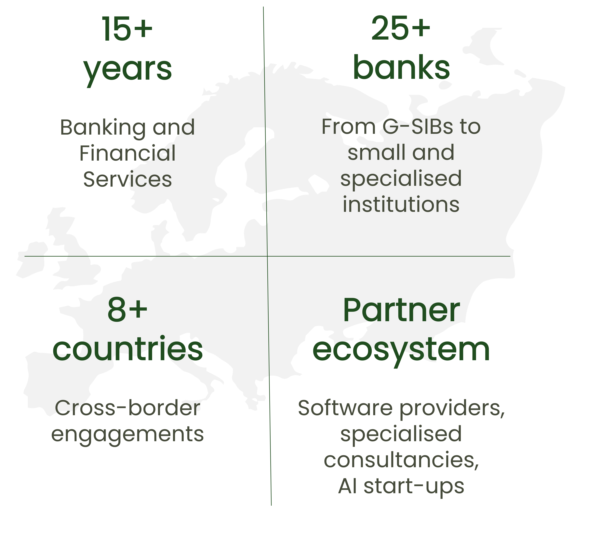

About
My name is Ina Dimitrieva and I became a business advisor in ESG & Sustainability after working in the financial services industry for more than 10 years. I work together with financial institutions, public organisations and management consultancies to accelerate the transition towards green economy. I provide state-of-the-art solutions for financial market participants and thus enable them to become forerunners in sustainable finance.
I am home-based in Vienna (Austria), where I graduated from the University of Economics and Business Administration. Throughout my studies and professional career I have gathered international experience in several countries.
My mission
- to change the world of banking within planetary boundaries and social foundations
- to bring in my expertise in risk management
- to develop best practices in sustainable finance
- to promote and enhance the culture of managing ESG risks
- to work in partner network with common goals
My experience

From Global Financial Crisis to Polycrisis
Highly motivated by the global events around and in aftermath of the greatest financial crisis of 2017 I started my career in risk management more than a decade ago. By learning the fundamentals of the financial services industry and its special role for the economy and society as whole, I have dedicated many years on understanding, transforming and enhancing the risk management frameworks of banks. By focusing on the overarching goals of financial stability, risk resilience and facilitating the functioning of the real economy I have supported numerous projects on fulfilling regulatory requirements and business needs in the area of bank risk management. I have worked for several years as external consultant for institutions in Europe and as a bank internal risk manager as well.
Now, with the emerging climate crisis and rising societal expectations on sustainability and business ethics, banks are about to be challenged again in their adaptability of risk management practices in order to sustain the stability of the financial markets and facilitate the green economy transformation. I find myself again in the role to support this inevitable process and contribute with my long term experience and in-depth expertise to the banking for future.